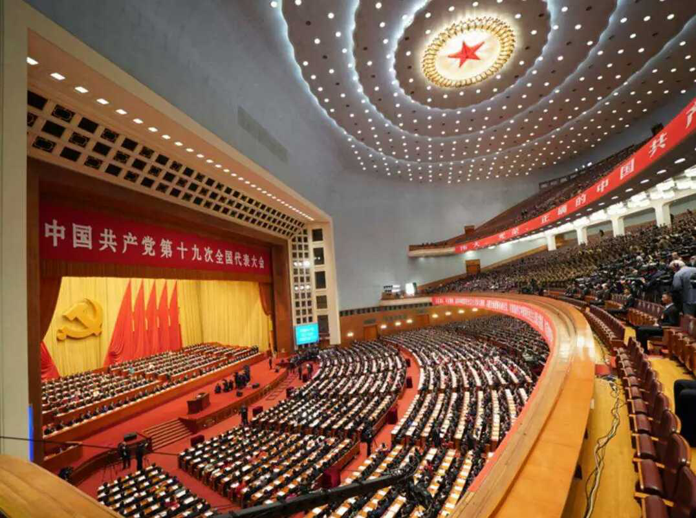

新华社北京10月18日 习近平强调，要贯彻新发展理念，建设现代化经济体系。
习近平指出，必须坚定不移把发展作为党执政兴国的第一要务，坚持解放和发展社会生产力，坚持社会主义市场经济改革方向，推动经济持续健康发展。
习近平说，我国经济已由高速增长阶段转向高质量发展阶段，正处在转变发展方式、优化经济结构、转换增长动力的攻关期，建设现代化经济体系是跨越关口的迫切要求和我国发展的战略目标。必须坚持质量第一、效益优先，以供给侧结构性改革为主线，推动经济发展质量变革、效率变革、动力变革，提高全要素生产率，着力加快建设实体经济、科技创新、现代金融、人力资源协同发展的产业体系，着力构建市场机制有效、微观主体有活力、宏观调控有度的经济体制，不断增强我国经济创新力和竞争力。

深化供给侧结构性改革。建设现代化经济体系，必须把发展经济的着力点放在实体经济上，把提高供给体系质量作为主攻方向，显著增强我国经济质量优势。
加快建设创新型国家。要瞄准世界科技前沿，强化基础研究，实现前瞻性基础研究、引领性原创成果重大突破。
实施乡村振兴战略。农业农村农民问题是关系国计民生的根本性问题，必须始终把解决好“三农”问题作为全党工作重中之重。要坚持农业农村优先发展，巩固和完善农村基本经营制度，保持土地承包关系稳定并长久不变，第二轮土地承包到期后再延长三十年。确保国家粮食安全，把中国人的饭碗牢牢端在自己手中。加强农村基层基础工作，培养造就一支懂农业、爱农村、爱农民的“三农”工作队伍。
实施区域协调发展战略。加大力度支持革命老区、民族地区、边疆地区、贫困地区加快发展，强化举措推进西部大开发形成新格局，深化改革加快东北等老工业基地振兴，发挥优势推动中部地区崛起，创新引领率先实现东部地区优化发展，建立更加有效的区域协调发展新机制。
加快完善社会主义市场经济体制。经济体制改革必须以完善产权制度和要素市场化配置为重点，实现产权有效激励、要素自由流动、价格反应灵活、竞争公平有序、企业优胜劣汰。
推动形成全面开放新格局。中国开放的大门不会关闭，只会越开越大。要以“一带一路”建设为重点，坚持引进来和走出去并重，遵循共商共建共享原则，加强创新能力开放合作，形成陆海内外联动、东西双向互济的开放格局。
习近平强调，解放和发展社会生产力，是社会主义的本质要求。我们要激发全社会创造力和发展活力，努力实现更高质量、更有效率、更加公平、更可持续的发展。
本文系作者授权百度百家发表，未经许可，不得转载。